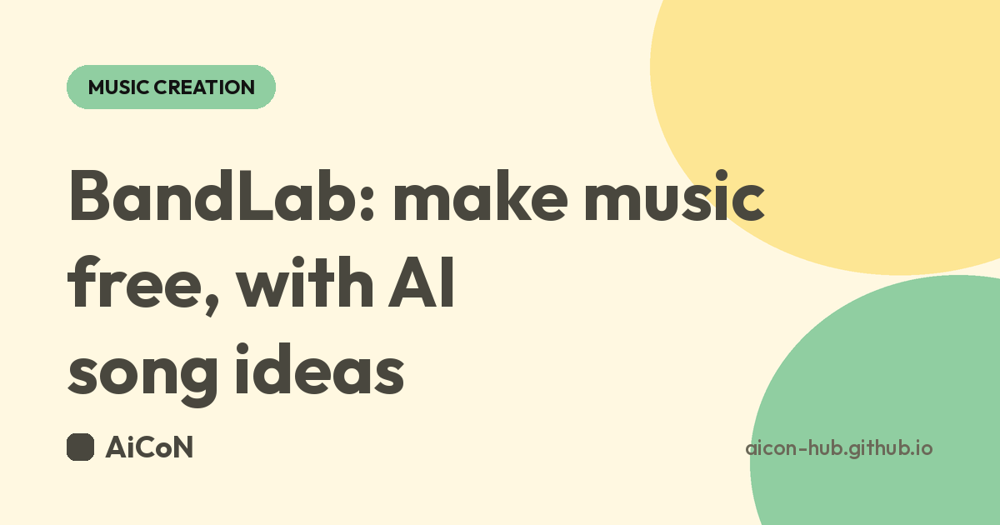

BandLab: a free music studio with AI song ideas
BandLab lets you record, edit and mix songs on your phone or in a browser, and its SongStarter tool gives you AI-made song ideas when you are stuck. The app and studio are free to use. Here is how to start, and what to check first.

What is BandLab?
BandLab is an online music studio (a DAW, or digital audio workstation) from BandLab Singapore. You can record vocals or instruments, stack multiple tracks, add effects and presets, and share your song with other creators on the app. It runs as an app on your phone and as a website on a computer.
BandLab states that its app and studio are free to download and use, and that its music creation tools, including mastering and effects and presets, are free. It also sells paid premium plans.
What does SongStarter AI do?
SongStarter is an AI-powered idea generator inside BandLab. It offers ready-made song ideas across different genres that you can change and build on. It is meant to help when you have no idea where to begin.
- You pick a genre, then tap or click Generate.
- You can change the genre, mood, tempo and key, and switch between variations.
- If you do not like the idea, regenerate for a new one.
- When you are happy, save it as a project or open it in the studio and keep editing.
How to start on your phone
- Install BandLab from Google Play (Android) or the App Store (iPhone). All download options are on bandlab.com/download.
- Open the app and sign up or log in when it asks. You need to be online to save projects.
- From the main feed, go to the Create tab.
- Under Tools, tap SongStarter.
- Choose a genre from the dropdown at the top left. Use Settings at the bottom right to change mood, tempo and key.
- Tap the 1, 2 or 3 buttons for variations, or Regenerate for a new idea.
- Tap Save as Project or Edit in Studio, then add your own vocals or instruments.
How to start in a browser (laptop or desktop)
- Open bandlab.com in Google Chrome. BandLab recommends Chrome, and says any Chromium-based browser also works.
- Sign up or log in.
- On the home page, click Create at the top right, then click SongStarter. You can also find it under More Products at the top left.
- Pick a genre and click Generate. Adjust genre, mood, tempo and key at the top.
- Click Regenerate for new ideas, then Save as Project or Edit in Studio.
Steps follow BandLab's own help article, last updated 5 October 2026. Button names can change after app updates.
Is BandLab really free? Free vs paid
| Free | The app and studio, multi-track projects, free cloud storage, effects and presets, and online mastering, as stated by BandLab. |
|---|---|
| Paid | BandLab sells premium membership plans (Pro and Max). Prices on its membership page are listed in US dollars, so check the current price and your card or payment options before you buy. You do not need a plan to start. |
| Offline use | You can work on projects offline, but you must be online to save projects or download instruments and samples. |
| Exporting | Songs are not stored as local project files on your phone. You can export a song as one audio file, or download each track. |
Is it available in India?
Yes. BandLab is listed on the Apple App Store in India as a free app, and its website loads normally from India. We found no regional restriction on BandLab's own pages. Data use depends on what you do: it works on mobile data or Wi-Fi, and uploading or downloading samples uses data, so Wi-Fi is better for big projects.
Who is it for?
Students, hobby singers, college and church bands, reel and short-video creators who want original background music, and anyone who wants to try music production without paying for software.
Frequently asked questions
Do I need to pay to use BandLab?
No. BandLab says the app and studio are free to download and use. Paid plans are optional.
Can I use BandLab on a laptop?
Yes, in a web browser. Chrome is recommended.
Can I use SongStarter without an account?
BandLab's steps start from the signed-in app or studio. Create a free account to be safe, since you also need one to save projects.
Can I use SongStarter music in my videos?
BandLab says you can use generated tracks without fees or royalties, but you will not own the rights. Check its terms before using them commercially.
Sources: BandLab download page and FAQ | BandLab Help: Generate Ideas with SongStarter AI | BandLab membership plans. Checked 6 October 2026.